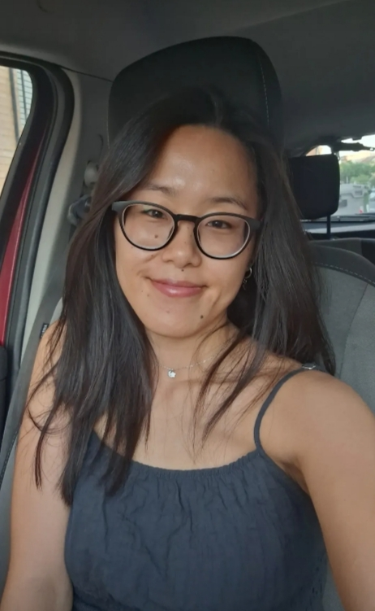

SUPERPODER Nº 0101/03
Super enfermera
Capaz de cuidar a todo el mundo, mantener la calma y resolver marrones profesionales. La paciente, sin embargo, no siempre aplica ese criterio consigo misma.
VOCACIÓN98%
HOY SE CELEBRA UN DÍA IMPORTANTE · EDICIÓN ESPECIAL
Hoy cumple años una super enfermera, lectora de ratitos tranquilos, amante de los gatos adorables y oficialmente una de las personas más geniales de este planeta.

01 — RAZONES PARA CELEBRARTE
Informe elaborado por un comité independiente de gente que te tiene mucho cariño.
Capaz de cuidar a todo el mundo, mantener la calma y resolver marrones profesionales. La paciente, sin embargo, no siempre aplica ese criterio consigo misma.
Hay quien colecciona sellos; tú a veces coleccionas algún que otro golpe de origen misterioso. Por suerte, el sentido del humor sigue intacto.
A veces la idea se va a dar una vuelta y tarda en volver. Mientras tanto, siempre nos queda reírnos un poquito.
02 — PLAN PARA TU NUEVA VUELTA AL SOL
Sin efectos secundarios conocidos, salvo sonreír un poco más.
PARA: MARÍA ELENA · DOSIS: SIN LÍMITE
MISIÓN CUMPLIDA
Diagnóstico final: persona estupenda. Pronóstico: un año lleno de cosas bonitas. 🐈